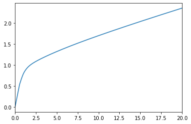
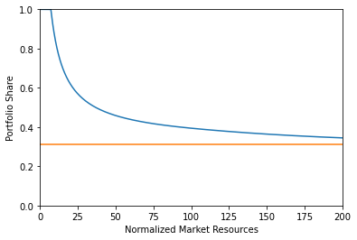
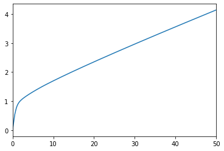
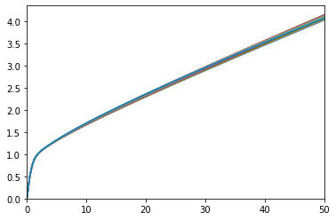
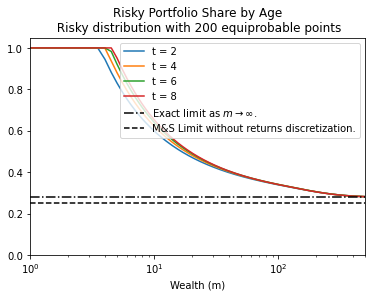

[1]:
"""
Example implementations of HARK.ConsumptionSaving.ConsPortfolioModel
"""
from copy import copy
from time import time
import matplotlib.pyplot as plt
import numpy as np
from HARK.ConsumptionSaving.ConsIndShockModel import init_lifecycle
from HARK.ConsumptionSaving.ConsPortfolioModel import (
PortfolioConsumerType,
init_portfolio,
)
from HARK.utilities import plot_funcs
[2]:
# Make and solve an example portfolio choice consumer type
print("Now solving an example portfolio choice problem; this might take a moment...")
MyType = PortfolioConsumerType()
MyType.cycles = 0
t0 = time()
MyType.solve()
t1 = time()
MyType.cFunc = [MyType.solution[t].cFuncAdj for t in range(MyType.T_cycle)]
MyType.ShareFunc = [MyType.solution[t].ShareFuncAdj for t in range(MyType.T_cycle)]
print(
"Solving an infinite horizon portfolio choice problem took "
+ str(t1 - t0)
+ " seconds."
)
Now solving an example portfolio choice problem; this might take a moment...
Solving an infinite horizon portfolio choice problem took 10.72180986404419 seconds.
[3]:
# Plot the consumption and risky-share functions
print("Consumption function over market resources:")
plot_funcs(MyType.cFunc[0], 0.0, 20.0)
print("Risky asset share as a function of market resources:")
print("Optimal (blue) versus Theoretical Limit (orange)")
plt.xlabel("Normalized Market Resources")
plt.ylabel("Portfolio Share")
plt.ylim(0.0, 1.0)
# Since we are using a discretization of the lognormal distribution,
# the limit is numerically computed and slightly different from
# the analytical limit obtained by Merton and Samuelson for infinite wealth
plot_funcs(
[
MyType.ShareFunc[0],
lambda m: MyType.ShareLimit * np.ones_like(m),
],
0.0,
200.0,
)
Consumption function over market resources:

Risky asset share as a function of market resources:
Optimal (blue) versus Theoretical Limit (orange)

[4]:
# Now simulate this consumer type
MyType.track_vars = ["cNrm", "Share", "aNrm", "t_age"]
MyType.T_sim = 100
MyType.initialize_sim()
MyType.simulate()
[4]:
{'cNrm': array([[1.50746544, 1.00804051, 1.06173514, ..., 1.1337741 , 0.97563921,
0.89844339],
[1.40986731, 0.972063 , 1.05755593, ..., 1.05820018, 0.96080905,
0.92729845],
[1.40686433, 0.908755 , 1.09607755, ..., 1.09878779, 0.95347089,
0.948965 ],
...,
[1.18728885, 1.03394204, 1.14514013, ..., 1.02585236, 1.00857822,
0.9148828 ],
[1.23573395, 1.0975886 , 1.21507636, ..., 1.08886964, 1.10262934,
0.95285755],
[1.22475386, 1.11667582, 1.22554884, ..., 1.12793892, 1.11527911,
0.99247758]]),
'Share': array([[0.9929004, 1. , 1. , ..., 1. , 1. ,
1. ],
[1. , 1. , 1. , ..., 1. , 1. ,
1. ],
[1. , 1. , 1. , ..., 1. , 1. ,
1. ],
...,
[1. , 1. , 1. , ..., 1. , 1. ,
1. ],
[1. , 1. , 1. , ..., 1. , 1. ,
1. ],
[1. , 1. , 1. , ..., 1. , 1. ,
1. ]]),
'aNrm': array([[5.83743542, 0.87502851, 1.2282834 , ..., 1.81486877, 0.70534632,
0.42311082],
[4.67649062, 0.68896667, 1.19778274, ..., 1.20239524, 0.63904208,
0.5118482 ],
[4.64188546, 0.45283361, 1.4944918 , ..., 1.51659186, 0.60857522,
0.59033605],
...,
[2.30820383, 1.0349345 , 1.91620307, ..., 0.98285439, 0.87818388,
0.4716979 ],
[2.7850111 , 1.50681334, 2.57852755, ..., 1.43639191, 1.54823592,
0.60607991],
[2.67467838, 1.6663329 , 2.68264645, ..., 1.76359938, 1.65436202,
0.78933187]]),
't_age': array([[ 1., 1., 1., ..., 1., 1., 1.],
[ 2., 2., 2., ..., 2., 2., 2.],
[ 3., 1., 3., ..., 3., 3., 3.],
...,
[24., 96., 15., ..., 17., 4., 46.],
[25., 97., 16., ..., 18., 5., 47.],
[26., 98., 17., ..., 19., 6., 48.]])}
[5]:
print("\n\n\n")
print("For derivation of the numerical limiting portfolio share")
print("as market resources approach infinity, see")
print(
"http://www.econ2.jhu.edu/people/ccarroll/public/lecturenotes/AssetPricing/Portfolio-CRRA/"
)
For derivation of the numerical limiting portfolio share
as market resources approach infinity, see
http://www.econ2.jhu.edu/people/ccarroll/public/lecturenotes/AssetPricing/Portfolio-CRRA/
[6]:
""
# Make another example type, but this one optimizes risky portfolio share only
# on the discrete grid of values implicitly chosen by RiskyCount, using explicit
# value maximization.
init_discrete_share = init_portfolio.copy()
init_discrete_share["DiscreteShareBool"] = True
# Have to actually construct value function for this to work
init_discrete_share["vFuncBool"] = True
[7]:
# Make and solve a discrete portfolio choice consumer type
print("Now solving a discrete choice portfolio problem; this might take a minute...")
DiscreteType = PortfolioConsumerType(**init_discrete_share)
DiscreteType.cycles = 0
t0 = time()
DiscreteType.solve()
t1 = time()
DiscreteType.cFunc = [
DiscreteType.solution[t].cFuncAdj for t in range(DiscreteType.T_cycle)
]
DiscreteType.ShareFunc = [
DiscreteType.solution[t].ShareFuncAdj for t in range(DiscreteType.T_cycle)
]
print(
"Solving an infinite horizon discrete portfolio choice problem took "
+ str(t1 - t0)
+ " seconds."
)
Now solving a discrete choice portfolio problem; this might take a minute...
Solving an infinite horizon discrete portfolio choice problem took 21.6518394947052 seconds.
[8]:
# Plot the consumption and risky-share functions
print("Consumption function over market resources:")
plot_funcs(DiscreteType.cFunc[0], 0.0, 50.0)
print("Risky asset share as a function of market resources:")
print("Optimal (blue) versus Theoretical Limit (orange)")
plt.xlabel("Normalized Market Resources")
plt.ylabel("Portfolio Share")
plt.ylim(0.0, 1.0)
# Since we are using a discretization of the lognormal distribution,
# the limit is numerically computed and slightly different from
# the analytical limit obtained by Merton and Samuelson for infinite wealth
plot_funcs(
[DiscreteType.ShareFunc[0], lambda m: DiscreteType.ShareLimit * np.ones_like(m)],
0.0,
200.0,
)
Consumption function over market resources:

Risky asset share as a function of market resources:
Optimal (blue) versus Theoretical Limit (orange)

[9]:
print("\n\n\n")
[10]:
""
# Make another example type, but this one can only update their risky portfolio
# share in any particular period with 15% probability.
init_sticky_share = init_portfolio.copy()
init_sticky_share["AdjustPrb"] = 0.15
[11]:
# Make and solve a discrete portfolio choice consumer type
print(
'Now solving a portfolio choice problem with "sticky" portfolio shares; this might take a moment...'
)
StickyType = PortfolioConsumerType(**init_sticky_share)
StickyType.cycles = 0
t0 = time()
StickyType.solve()
t1 = time()
StickyType.cFuncAdj = [
StickyType.solution[t].cFuncAdj for t in range(StickyType.T_cycle)
]
StickyType.cFuncFxd = [
StickyType.solution[t].cFuncFxd for t in range(StickyType.T_cycle)
]
StickyType.ShareFunc = [
StickyType.solution[t].ShareFuncAdj for t in range(StickyType.T_cycle)
]
print(
"Solving an infinite horizon sticky portfolio choice problem took "
+ str(t1 - t0)
+ " seconds."
)
Now solving a portfolio choice problem with "sticky" portfolio shares; this might take a moment...
Solving an infinite horizon sticky portfolio choice problem took 111.06221723556519 seconds.
[12]:
# Plot the consumption and risky-share functions
print(
"Consumption function over market resources when the agent can adjust his portfolio:"
)
plot_funcs(StickyType.cFuncAdj[0], 0.0, 50.0)
Consumption function over market resources when the agent can adjust his portfolio:

[13]:
print(
"Consumption function over market resources when the agent CAN'T adjust, by current share:"
)
M = np.linspace(0.0, 50.0, 200)
for s in np.linspace(0.0, 1.0, 21):
C = StickyType.cFuncFxd[0](M, s * np.ones_like(M))
plt.plot(M, C)
plt.xlim(0.0, 50.0)
plt.ylim(0.0, None)
plt.show()
Consumption function over market resources when the agent CAN'T adjust, by current share:

[14]:
print("Risky asset share function over market resources (when possible to adjust):")
print("Optimal (blue) versus Theoretical Limit (orange)")
plt.xlabel("Normalized Market Resources")
plt.ylabel("Portfolio Share")
plt.ylim(0.0, 1.0)
plot_funcs(
[StickyType.ShareFunc[0], lambda m: StickyType.ShareLimit * np.ones_like(m)],
0.0,
200.0,
)
Risky asset share function over market resources (when possible to adjust):
Optimal (blue) versus Theoretical Limit (orange)

[15]:
""
# Make another example type, but this one has *age-varying* perceptions of risky asset returns.
# Begin by making a lifecycle dictionary, but adjusted for the portfolio choice model.
init_age_varying_risk_perceptions = copy(init_lifecycle)
init_age_varying_risk_perceptions["RiskyCount"] = init_portfolio["RiskyCount"]
init_age_varying_risk_perceptions["ShareCount"] = init_portfolio["ShareCount"]
init_age_varying_risk_perceptions["aXtraMax"] = init_portfolio["aXtraMax"]
init_age_varying_risk_perceptions["aXtraCount"] = init_portfolio["aXtraCount"]
init_age_varying_risk_perceptions["aXtraNestFac"] = init_portfolio["aXtraNestFac"]
init_age_varying_risk_perceptions["BoroCnstArt"] = init_portfolio["BoroCnstArt"]
init_age_varying_risk_perceptions["CRRA"] = init_portfolio["CRRA"]
init_age_varying_risk_perceptions["DiscFac"] = init_portfolio["DiscFac"]
[16]:
init_age_varying_risk_perceptions["RiskyAvg"] = [1.08] * init_lifecycle["T_cycle"]
init_age_varying_risk_perceptions["RiskyStd"] = list(
np.linspace(0.20, 0.30, init_lifecycle["T_cycle"])
)
init_age_varying_risk_perceptions["RiskyAvgTrue"] = 1.08
init_age_varying_risk_perceptions["RiskyStdTrue"] = 0.20
AgeVaryingRiskPercType = PortfolioConsumerType(**init_age_varying_risk_perceptions)
AgeVaryingRiskPercType.cycles = 1
[17]:
# Solve the agent type with age-varying risk perceptions
# print('Now solving a portfolio choice problem with age-varying risk perceptions...')
t0 = time()
AgeVaryingRiskPercType.solve()
AgeVaryingRiskPercType.cFunc = [
AgeVaryingRiskPercType.solution[t].cFuncAdj
for t in range(AgeVaryingRiskPercType.T_cycle)
]
AgeVaryingRiskPercType.ShareFunc = [
AgeVaryingRiskPercType.solution[t].ShareFuncAdj
for t in range(AgeVaryingRiskPercType.T_cycle)
]
t1 = time()
print(
"Solving a "
+ str(AgeVaryingRiskPercType.T_cycle)
+ " period portfolio choice problem with age-varying risk perceptions took "
+ str(t1 - t0)
+ " seconds."
)
Solving a 65 period portfolio choice problem with age-varying risk perceptions took 5.567425489425659 seconds.
[18]:
# Plot the consumption and risky-share functions
print("Consumption function over market resources in each lifecycle period:")
plot_funcs(AgeVaryingRiskPercType.cFunc, 0.0, 20.0)
print("Risky asset share function over market resources in each lifecycle period:")
plot_funcs(AgeVaryingRiskPercType.ShareFunc, 0.0, 200.0)
Consumption function over market resources in each lifecycle period:

Risky asset share function over market resources in each lifecycle period:

The code below tests the mathematical limits of the model.
[19]:
# Create a grid of market resources for the plots
mMin = 0 # Minimum ratio of assets to income to plot
mMax = 5 * 1e2 # Maximum ratio of assets to income to plot
mPts = 1000 # Number of points to plot
eevalgrid = np.linspace(0, mMax, mPts) # range of values of assets for the plot
# Number of points that will be used to approximate the risky distribution
risky_count_grid = [5, 50, 200]
# Plot by ages (time periods) at which to plot. We will use the default life-cycle calibration.
ages = [2, 4, 6, 8]
# Create lifecycle dictionary with portfolio choice parameters
merton_dict = copy(init_lifecycle)
merton_dict["RiskyCount"] = init_portfolio["RiskyCount"]
merton_dict["ShareCount"] = init_portfolio["ShareCount"]
merton_dict["aXtraMax"] = init_portfolio["aXtraMax"]
merton_dict["aXtraCount"] = init_portfolio["aXtraCount"]
merton_dict["aXtraNestFac"] = init_portfolio["aXtraNestFac"]
merton_dict["BoroCnstArt"] = init_portfolio["BoroCnstArt"]
merton_dict["CRRA"] = init_portfolio["CRRA"]
merton_dict["DiscFac"] = init_portfolio["DiscFac"]
merton_dict["RiskyAvgTrue"] = 1.08
merton_dict["RiskyStdTrue"] = 0.20
# Create a function to compute the Merton-Samuelson limiting portfolio share.
def RiskyShareMertSamLogNormal(RiskPrem, CRRA, RiskyVar):
return RiskPrem / (CRRA * RiskyVar)
[20]:
for rcount in risky_count_grid:
# Create a new dictionary and replace the number of points that
# approximate the risky return distribution
# Create new dictionary copying the default
merton_dict["RiskyCount"] = rcount
# Create and solve agent
agent = PortfolioConsumerType(**merton_dict)
agent.solve()
# Compute the analytical Merton-Samuelson limiting portfolio share
RiskyVar = agent.RiskyStd ** 2
RiskPrem = agent.RiskyAvg - agent.Rfree
MS_limit = RiskyShareMertSamLogNormal(RiskPrem, agent.CRRA, RiskyVar)
# Now compute the limiting share numerically, using the approximated
# distribution
agent.update_ShareLimit()
NU_limit = agent.ShareLimit
plt.figure()
for a in ages:
plt.plot(
eevalgrid, agent.solution[a].ShareFuncAdj(eevalgrid), label="t = %i" % (a)
)
plt.axhline(
NU_limit, c="k", ls="-.", label="Exact limit as $m\\rightarrow \\infty$."
)
plt.axhline(
MS_limit, c="k", ls="--", label="M&S Limit without returns discretization."
)
plt.ylim(0, 1.05)
plt.xlim(eevalgrid[0] + 1, eevalgrid[-1])
plt.xscale("log")
plt.legend()
plt.title(
"Risky Portfolio Share by Age\n Risky distribution with {points} equiprobable points".format(
points=rcount
)
)
plt.xlabel("Wealth (m)")
plt.ioff()
plt.draw()



[ ]:
[ ]: